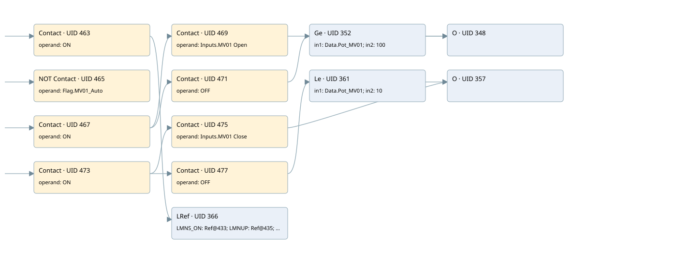

controll tc03 moduling mv01
cyc_int5 ogni 100ms · 검색 색인 순서 8 · 원본 내부 NID 추정 8
백업 PLF 원본의 3102013 바이트 위치에서 복원한 XML. 검색 문서 11의 객체 키 16102200d86a000000000000와 연결했다. 이름 해석 24/33개. 남은 RefId는 상수 또는 미해석 참조다.
연결 구조 다시 그리기
원본 Part/PCon/Wire를 이용한 연결도다. TIA 화면의 래더 배치 또는 실행 결과를 재현한 그림은 아니다. 핀 연결은 아래 표와 원본 XML을 기준으로 읽는다. 노드 위에 마우스를 두면 피연산자 이름을 볼 수 있다.

접점·코일·블록과 피연산자
| Part UID | Gate | Negated 핀 | 연결 피연산자 |
|---|---|---|---|
| 463 | Contact | operand = ON | |
| 465 | Contact | operand | operand = Flag.MV01_Auto |
| 467 | Contact | operand = ON | |
| 469 | Contact | operand = Inputs.MV01 Open | |
| 471 | Contact | operand = OFF | |
| 352 | Ge | in1 = Data.Pot_MV01; in2 = 100 | |
| 348 | O | ||
| 473 | Contact | operand = ON | |
| 475 | Contact | operand = Inputs.MV01 Close | |
| 477 | Contact | operand = OFF | |
| 361 | Le | in1 = Data.Pot_MV01; in2 = 10 | |
| 357 | O | ||
| 366 | LRef | 호출 참조: RefId 113; LMNS_ON = RefId (RefId 없음) / ORef UID 433; LMNUP = RefId (RefId 없음) / ORef UID 435; LMNDN = RefId (RefId 없음) / ORef UID 437; PVPER_ON = RefId (RefId 없음) / ORef UID 439; CYCLE = T#100MS; SP_INT = Real_SP_TC03xMV01; PV_IN = Real_TC03xMV01; PV_PER = RefId (RefId 없음) / ORef UID 444; GAIN = 3.0; TI = T#3M; DEADB_W = 1.0; PV_FAC = RefId (RefId 없음) / ORef UID 449; PV_OFF = RefId (RefId 없음) / ORef UID 451; PULSE_TM = T#500MS; BREAK_TM = T#1S; MTR_TM = T#31S; DISV = 1.0; QLMNUP = UP MV01 PID; QLMNDN = DOWN MV01 PID; PV = RefId (RefId 없음) / ORef UID 459; ER = RefId (RefId 없음) / ORef UID 461 |
접점 경로를 펼친 조건식
Contact·O/A·비교기의 원본 연결을 읽기 쉽게 펼친 보조 해석이다. POWER는 전원 레일 시작을 뜻한다. 호출 블록·에지·타이머의 내부 동작과 다중 쓰기 순서는 이 표로 실행 검증하지 않았다. 미해석 핀과 RefId는 원문 연결표에서 확인한다.
| UID | 동작 | 대상 | 원본 접점 경로 | 내용 |
|---|
원본 배선 연결
| Wire UID | 동일 Wire 연결 끝점 |
|---|---|
| 479 | Powerrail {} ↔ Part 463.in ↔ Part 465.in ↔ Part 467.in ↔ Part 473.in |
| 413 | ORef 388 (ON) ↔ Part 463.operand |
| 464 | Part 463.out ↔ Part 366.en |
| 414 | ORef 389 (Flag.MV01_Auto) ↔ Part 465.operand |
| 466 | Part 465.out ↔ Part 366.COM_RST |
| 415 | ORef 390 (ON) ↔ Part 467.operand |
| 468 | Part 467.out ↔ Part 469.in ↔ Part 471.in |
| 416 | ORef 391 (Inputs.MV01 Open) ↔ Part 469.operand |
| 470 | Part 469.out ↔ Part 348.in1 |
| 417 | ORef 392 (OFF) ↔ Part 471.operand |
| 472 | Part 471.out ↔ Part 352.pre |
| 418 | ORef 393 (Data.Pot_MV01) ↔ Part 352.in1 |
| 419 | ORef 394 (100) ↔ Part 352.in2 |
| 420 | Part 352.out ↔ Part 348.in2 |
| 422 | Part 348.out ↔ Part 366.LMNR_HS |
| 424 | ORef 395 (ON) ↔ Part 473.operand |
| 474 | Part 473.out ↔ Part 475.in ↔ Part 477.in |
| 425 | ORef 396 (Inputs.MV01 Close) ↔ Part 475.operand |
| 476 | Part 475.out ↔ Part 357.in1 |
| 426 | ORef 397 (OFF) ↔ Part 477.operand |
| 478 | Part 477.out ↔ Part 361.pre |
| 427 | ORef 398 (Data.Pot_MV01) ↔ Part 361.in1 |
| 428 | ORef 399 (10) ↔ Part 361.in2 |
| 429 | Part 361.out ↔ Part 357.in2 |
| 431 | Part 357.out ↔ Part 366.LMNR_LS |
| 434 | ORef 433 (RefId (RefId 없음)) ↔ Part 366.LMNS_ON |
| 436 | ORef 435 (RefId (RefId 없음)) ↔ Part 366.LMNUP |
| 438 | ORef 437 (RefId (RefId 없음)) ↔ Part 366.LMNDN |
| 440 | ORef 439 (RefId (RefId 없음)) ↔ Part 366.PVPER_ON |
| 441 | ORef 400 (T#100MS) ↔ Part 366.CYCLE |
| 442 | ORef 401 (Real_SP_TC03xMV01) ↔ Part 366.SP_INT |
| 443 | ORef 402 (Real_TC03xMV01) ↔ Part 366.PV_IN |
| 445 | ORef 444 (RefId (RefId 없음)) ↔ Part 366.PV_PER |
| 446 | ORef 403 (3.0) ↔ Part 366.GAIN |
| 447 | ORef 404 (T#3M) ↔ Part 366.TI |
| 448 | ORef 405 (1.0) ↔ Part 366.DEADB_W |
| 450 | ORef 449 (RefId (RefId 없음)) ↔ Part 366.PV_FAC |
| 452 | ORef 451 (RefId (RefId 없음)) ↔ Part 366.PV_OFF |
| 453 | ORef 406 (T#500MS) ↔ Part 366.PULSE_TM |
| 454 | ORef 407 (T#1S) ↔ Part 366.BREAK_TM |
| 455 | ORef 408 (T#31S) ↔ Part 366.MTR_TM |
| 456 | ORef 409 (1.0) ↔ Part 366.DISV |
| 457 | Part 366.QLMNUP ↔ ORef 410 (UP MV01 PID) |
| 458 | Part 366.QLMNDN ↔ ORef 411 (DOWN MV01 PID) |
| 460 | Part 366.PV ↔ ORef 459 (RefId (RefId 없음)) |
| 462 | Part 366.ER ↔ ORef 461 (RefId (RefId 없음)) |
식별자 해석 근거 33개
| ORef UID | RefId | 이름 | IdentXmlPart 파일 | 해석 방법 |
|---|---|---|---|---|
| 388 | 17 | ON | 0670-IdentXmlPart.xml | UID/RID + search-text + NID agreement |
| 389 | 64 | Flag.MV01_Auto | 0668-IdentXmlPart.xml | UID/RID + search-text + NID agreement |
| 390 | 17 | ON | 0670-IdentXmlPart.xml | UID/RID + search-text + NID agreement |
| 391 | 125 | Inputs.MV01 Open | 0668-IdentXmlPart.xml | UID/RID + search-text + NID agreement |
| 392 | 53 | OFF | 0670-IdentXmlPart.xml | UID/RID + search-text + NID agreement |
| 393 | 66 | Data.Pot_MV01 | 0668-IdentXmlPart.xml | UID/RID + search-text + NID agreement |
| 394 | 67 | 100 | 0667-IdentXmlPart.xml | literal candidate: UID/RID/NID + nearby named declarations + search-text agreement |
| 395 | 17 | ON | 0670-IdentXmlPart.xml | UID/RID + search-text + NID agreement |
| 396 | 126 | Inputs.MV01 Close | 0668-IdentXmlPart.xml | UID/RID + search-text + NID agreement |
| 397 | 53 | OFF | 0670-IdentXmlPart.xml | UID/RID + search-text + NID agreement |
| 398 | 66 | Data.Pot_MV01 | 0668-IdentXmlPart.xml | UID/RID + search-text + NID agreement |
| 399 | 69 | 10 | 0667-IdentXmlPart.xml | literal candidate: UID/RID/NID + nearby named declarations + search-text agreement |
| 433 | (RefId 없음) | 미해석 RefId | 식별 선언 원본 참조 | 미해석 |
| 435 | (RefId 없음) | 미해석 RefId | 식별 선언 원본 참조 | 미해석 |
| 437 | (RefId 없음) | 미해석 RefId | 식별 선언 원본 참조 | 미해석 |
| 439 | (RefId 없음) | 미해석 RefId | 식별 선언 원본 참조 | 미해석 |
| 400 | 21 | T#100MS | 0667-IdentXmlPart.xml | literal candidate: UID/RID/NID + nearby named declarations + search-text agreement |
| 401 | 62 | Real_SP_TC03xMV01 | 0669-IdentXmlPart.xml | UID/RID + search-text + NID agreement |
| 402 | 63 | Real_TC03xMV01 | 0669-IdentXmlPart.xml | UID/RID + search-text + NID agreement |
| 444 | (RefId 없음) | 미해석 RefId | 식별 선언 원본 참조 | 미해석 |
| 403 | 72 | 3.0 | 0667-IdentXmlPart.xml | literal candidate: UID/RID/NID + nearby named declarations + search-text agreement |
| 404 | 73 | T#3M | 0667-IdentXmlPart.xml | literal candidate: UID/RID/NID + nearby named declarations + search-text agreement |
| 405 | 24 | 1.0 | 0667-IdentXmlPart.xml | literal candidate: UID/RID/NID + nearby named declarations + search-text agreement |
| 449 | (RefId 없음) | 미해석 RefId | 식별 선언 원본 참조 | 미해석 |
| 451 | (RefId 없음) | 미해석 RefId | 식별 선언 원본 참조 | 미해석 |
| 406 | 74 | T#500MS | 0667-IdentXmlPart.xml | literal candidate: UID/RID/NID + nearby named declarations + search-text agreement |
| 407 | 75 | T#1S | 0667-IdentXmlPart.xml | literal candidate: UID/RID/NID + nearby named declarations + search-text agreement |
| 408 | 76 | T#31S | 0667-IdentXmlPart.xml | literal candidate: UID/RID/NID + nearby named declarations + search-text agreement |
| 409 | 24 | 1.0 | 0667-IdentXmlPart.xml | literal candidate: UID/RID/NID + nearby named declarations + search-text agreement |
| 410 | 77 | UP MV01 PID | 0670-IdentXmlPart.xml | UID/RID + search-text + NID agreement |
| 411 | 78 | DOWN MV01 PID | 0670-IdentXmlPart.xml | UID/RID + search-text + NID agreement |
| 459 | (RefId 없음) | 미해석 RefId | 식별 선언 원본 참조 | 미해석 |
| 461 | (RefId 없음) | 미해석 RefId | 식별 선언 원본 참조 | 미해석 |
검색 코드 보조 자료
참조 명칭을 찾기 위한 자료이며 실행 순서나 AND/OR 관계는 위 연결표로 확인한다.
"on" cont_s "pidmv01" t#100ms #real_sp_tc03xmv01 #real_tc03xmv01 3.0 t#3m 1.0 t#500ms t#1s t#31s 1.0 "flag".mv01_auto "on" "inputs"."mv01 open" "off" "data".pot_mv01 100 "on" "inputs"."mv01 close" "off" "data".pot_mv01 10 "up mv01 pid" "down mv01 pid"